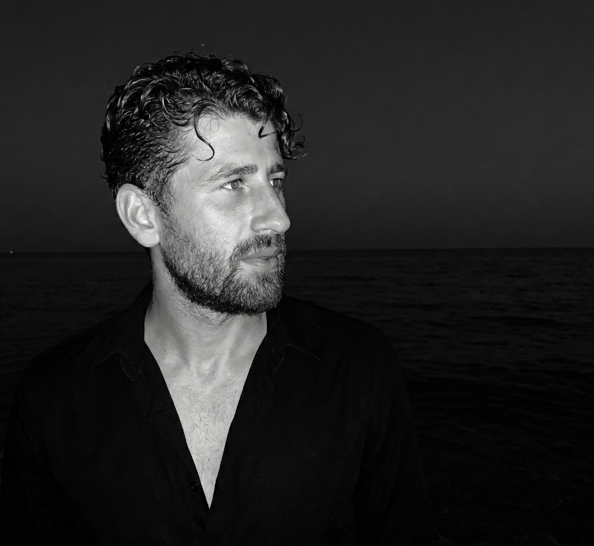

01
Reliability & uncertainty
Reliability-based design optimization, time-dependent reliability, and Bayesian and probabilistic assessments of berm breakwaters and desalination outfalls.
Uncertainty Quantification • Coastal & Ocean Engineering • Machine Learning & Deep Learning • Remote Sensing • Causal Inference • Hydrodynamics. I build reliability-based, causal-aware, and physics-informed models for coastal structures, desalination outfalls, wave overtopping, and marine water quality.

Currently a Graduate Research Assistant in Dr. Mohammad Reza Nikoo's lab at Sultan Qaboos University, Oman, implementing machine-learning and deep-learning techniques in ocean engineering and conducting uncertainty quantification in water engineering. Experience in reliability analysis, risk assessment, RBDO, causal inference, and AI-driven modeling of coastal and marine structures, alongside construction supervision at IRCEO.
Tarbiat Modares University (TMU), Tehran, Iran · GPA: 15.03 (out of 20)
Technical and Vocational University (TVU), Tehran, Iran · GPA: 14.94 (out of 20)
Awarded for M.Sc. thesis · Department ranked 102nd in the world for civil engineering according to US News.
Awarded for M.Sc. studies · Tarbiat Modares University – ranked 6th in Iran according to US News.
Awarded for Associate's Degree and B.Sc. studies · Technical and Vocational University
Water Research (IF: 12.8, Q1) · Acta Psychologica (IF: 3.8, Q1) · Scientific Reports (IF: 4.9, Q1)
My work spans probabilistic design, uncertainty, causal inference, and machine learning. The common thread is making coastal and water-engineering predictions more reliable, interpretable, and usable for design.
Reliability-based design optimization, time-dependent reliability, and Bayesian and probabilistic assessments of berm breakwaters and desalination outfalls.
XGBoost, quantum ML, physics-informed neural networks and operators, and graph neural networks for coastal and water engineering.
Causality-aware modeling for wave overtopping and harmful algal bloom prediction, linking explanation with prediction.
Satellite-driven chlorophyll-a prediction in semi-enclosed gulfs, wave fields, effluent dispersion, and extreme events.
Quantum machine learning (including a Quantum SVM) integrated with causal inference and uncertainty quantification for wave-overtopping estimation.
Read the paper →Bridging causality and deep learning for harmful algal bloom prediction.
Spatiotemporal chlorophyll-a prediction in semi-enclosed gulfs from satellite data and causal analysis.
A novel probabilistic environmental assessment for the reliability design of seawater desalination outfalls (M.Sc. thesis work).
Reliability design of reshaping berm breakwaters based on a Bayesian modification.
More than 10 Python tools: sediment transport estimators, breakwater design calculators, and coastal structure performance evaluators.
Conference talks, thesis defense, and ongoing research seminars on reliability-based design of berm breakwaters, quantum ML in ocean engineering, and causal inference in coastal systems at Tarbiat Modares University, Sultan Qaboos University, and international forums. See LinkedIn and Google Scholar for updates.
Sultan Qaboos University, Oman
Iran Construction Engineering Organization (IRCEO), Iran
Tarbiat Modares University and Coastal Hyd Lab, Iran
Tarbiat Modares University, Iran
Elsevier: Water Research (IF: 12.8, Q1); Acta Psychologica (IF: 3.8, Q1) · Springer Nature: Scientific Reports (IF: 4.9, Q1)
Excellent communication and interpersonal skills; leadership and teamwork abilities; strong organizational, time, and project management skills.
UQLab, MIKE Zero, SAP2000, ArcGIS Pro, Google Earth Engine, Delft3D, CORMIX. Also GeoStudio and PLAXIS 3D.
MATLAB, Python, Fortran.
Supervised learning methods; tools include XGBoost and SVM; familiarity with deep learning frameworks.
In progress (test scheduled) · Reading, Listening, Writing, Speaking
If you are interested in collaborating on research in coastal and ocean engineering, uncertainty quantification, or machine-learning applications, have questions about my work, or would like to discuss professional or PhD opportunities, please reach out.